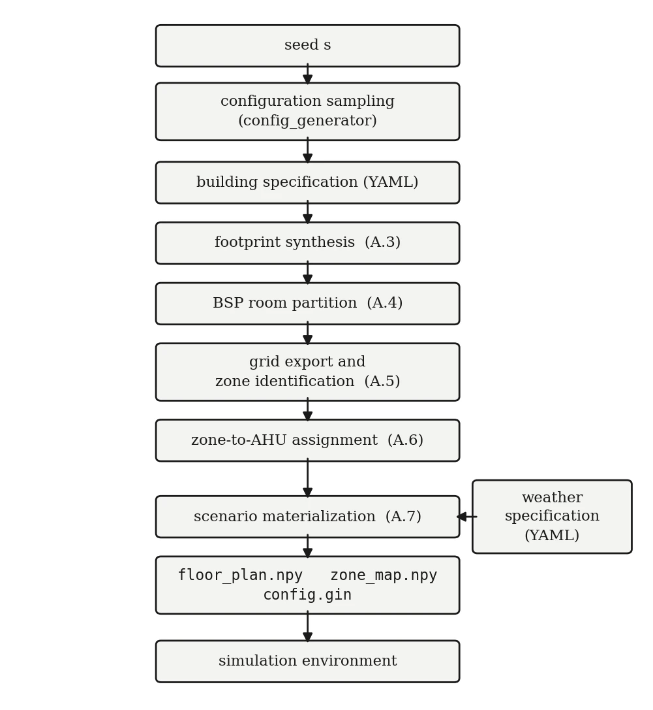

Procedural building generator
How the benchmark's synthetic buildings are generated: from an integer seed to a floor plan, thermal zones, AHU assignment and a complete simulator configuration.
This appendix documents the procedural building generator used to construct the simulation environments in the benchmark. Generation proceeds in two phases: (i) a lightweight configuration-sampling phase that maps an integer seed to a compact declarative building specification, and (ii) a materialization phase that deterministically expands this specification, together with a weather specification, into the artifacts consumed by the simulator.
A.1 Overview
Figure A.1 summarizes the pipeline. A seed s determines a building specification; the specification determines a footprint mask, a room partition, and an assignment of rooms to air-handling units (AHUs); and the cross product of building specifications with weather specifications yields the scenario set. All stochastic choices are drawn from generators seeded by s, so the mapping from seed to environment is a pure function, and the full 1000-scenario development set is reproducible from seeds and weather files.

Figure A.1. The building-generation pipeline. Arrows denote deterministic transformations; every stochastic draw is derived from the building seed s, so each stage is reproducible.
A.2 Configuration Sampling
The function generate_config(name, seed, …) instantiates a dedicated pseudo-random generator random.Random(seed) and draws each parameter of the building specification from a fixed range. The output is a small YAML document (approximately fifteen lines) that records the sampled values; the floor plan itself is never stored, only the specification required to regenerate it. Table A.1 lists the sampling ranges used for both the development and evaluation sets.
| Parameter | Range | Description |
width | [400, 700] | Grid width in cells, per floor |
height | [300, 500] | Grid height in cells, per floor |
num_floors | {2, 3, 4} | Number of floors |
min_room_size | [30, 60] | Minimum room dimension in cells; max_room_size is fixed at min_room_size + 20 |
shape_ratio | [0.28, 0.40] | Proportion parameter for H-, T-, and U-shaped components |
composite_coverage | [0.65, 0.85] | Minimum fraction of the canvas the footprint must occupy |
composite_style | architectural | Wing-based composite synthesis (Sec. A.3) |
num_ahus | {3, …, 8} | Number of air-handling units |
occupants_per_zone | {1, 2} | Simulated occupants per thermal zone |
Table A.1. Parameter ranges for configuration sampling (DEFAULT_RANGES in run_floor_generator.py). Integer-valued parameters are drawn uniformly from the closed range; the development buildings are seeds 0–9 under the composite footprint class.
Grid cells are dimensionless at this stage. During materialization each cell is realized as a 20 cm × 20 cm control volume (control_volume_cm = 20) with a floor height of 3 m, which fixes the physical scale of the thermal model.
A.3 Footprint Synthesis
The first materialization step selects the subset of the w × h canvas occupied by the building, represented as a Boolean mask. The generator supports ten primitive footprint classes (rectangle, trapezoid, H-shape, T-shape, pentagon, oval, U-shape, parallelogram, semicircle, triangle) and a composite class used for all benchmark buildings. The composite generator operates in an architectural mode designed to produce footprints characteristic of commercial construction:
- A rectangular base block covering 55–75% of each canvas dimension is placed at the canvas center.
- Between one and three wings are attached on uniformly chosen sides (north, south, east, west). Each wing is itself a primitive footprint — the sampling distribution favors rectangles, with H-, T-, and U-shapes as minority outcomes — scaled to 15–50% of the canvas and positioned to overlap the existing mass by 2–4 cells, ensuring fusion into a single region.
- If the occupied area remains below the coverage target (
composite_coverage· wh), up to eight additional wings are attached, after which the footprint’s bounding region is dilated outward one ring at a time until the target is met.
Each candidate mask must pass a quality gate comprising four predicates: (i) the mask forms exactly one 4-connected component; (ii) its area is at least 95% of the coverage target; (iii) it survives ⌊min_room_size/2⌋ iterations of binary erosion with a 3 × 3 structuring element, guaranteeing that no limb of the building is too narrow to contain a room; and (iv) its compactness satisfies P²/A ≤ 45, where P is the 4-neighborhood perimeter and A the area, rejecting excessively filamentary outlines. Synthesis is attempted at most five times; on failure the generator falls back to a full-canvas rectangle.
A.4 Room Partitioning via Binary Space Partitioning
The interior of the footprint is subdivided into rooms by a randomized binary space partitioning (BSP) procedure. The exterior wall is obtained by eroding the mask by the wall thickness (one cell) and taking the set difference between the mask and its erosion. The partition then proceeds recursively from the full canvas:
- Termination. A node is not split if either dimension falls below 2 ·
min_room_size. A node whose larger dimension is already belowmax_room_sizeterminates early with probability 0.3, introducing variance in room areas. - Split orientation. Nodes with aspect ratio exceeding 1.25 are split across their longer dimension; otherwise the orientation is chosen by a fair coin flip.
- Split position. The cut is placed at the node midpoint perturbed by a uniform offset of at most
split_variance= 0.3 of the feasible interval, clamped so that both children respectmin_room_size. - Footprint conformance. A child is retained only if at least 30% of its area intersects the building interior; children falling predominantly outside the footprint are discarded, so the BSP tree conforms to non-convex outlines without special-casing.
Each internal split boundary is rasterized as a one-cell wall, clipped to the footprint. Because clipping can leave wall segments terminating in free space, a repair pass (_extend_floating_walls) iteratively extends any non-perimeter wall cell with exactly one wall neighbor along its implied direction until it meets another wall, guaranteeing that the partition is airtight. Finally, connectivity is restored by inserting a door — an opening of width two cells — at the midpoint of the shared boundary of every pair of sibling subtrees, which by induction renders the entire floor mutually reachable.
A.4.1 Multi-floor buildings
Buildings with F > 1 floors are represented in a single two-dimensional grid: the F per-floor plans are stacked vertically, separated by bands of ten exterior rows that thermally and topologically isolate consecutive floors. All floors share the footprint mask synthesized for the first floor, yielding a consistent building envelope, while the BSP partition is drawn independently per floor, so interior layouts differ across floors.
A.5 Grid Export and Zone Identification
The completed plan is exported as two arrays with identical geometry — each padded by five cells of exterior space — that differ only in the treatment of doors (Table A.2). Cells take one of three values: 0 (interior space), 1 (wall), or 2 (exterior).
| Artifact | Doors encoded as | Consumer |
floor_plan.npy | interior space (0) | Thermal simulation; air exchanges freely through doorways |
zone_map.npy | wall (1) | Zone identification; each room closes into an isolated region |
Table A.2. The two grid exports. Sealing doors in the zone map makes rooms separable by connected-component analysis while leaving the thermal grid permeable.
Thermal zones are identified by 4-connected component labeling of the interior cells of the zone map and are named room_1, …, room_R in raster order. The simulator performs the identical computation when loading a scenario, so zone identities agree by construction. The zone count R is therefore an emergent property of the sampled canvas dimensions, footprint, and minimum room size rather than a directly specified parameter; consequently the dimensionality of the observation and action spaces varies across buildings.
A.6 Zone-to-AHU Assignment
Given R zones and N AHUs, the assignment procedure partitions the index sequence 1, …, R into N contiguous runs, so that each AHU serves a consecutive block of room indices. Run lengths are sampled uniformly subject to fairness bounds: every AHU serves at least ⌊R/2N⌋ (and no fewer than one) and at most ⌊2R/N⌋ zones. Because zones are numbered in raster order, contiguous index runs correspond to spatially coherent regions of the building, approximating the duct topology of real installations. The assignment is sampled with the building seed and is therefore fixed per building across weather conditions.
A.7 Scenario Materialization
A scenario is the pairing of one building specification with one weather specification. The benchmark employs six weather regimes (cold winter, 7–12 °C; mild winter; temperate; mild summer; hot summer, 32–36 °C; tropical), each defined by a diurnal low/high temperature pair and a convective heat-transfer coefficient. The simulator’s weather controller interpolates the pair sinusoidally, attaining the low at midnight and the high at noon on every simulated day.
For each building–weather pair, generate_scenario_from_config re-seeds the global random state from the building seed (serialized under a lock to preserve determinism under concurrent generation), regenerates the floor plan, performs zone identification and AHU assignment, and emits four artifacts to training_scenarios/<building>/<weather>/: the two grids of Section A.5, a copy of the merged specification, and a complete simulator configuration (config.gin). The latter instantiates the material properties of wall, air, and exterior control volumes; one air-handler device per AHU with its assigned zone list; the hot-water system (boiler and pump); the occupancy model with randomized per-day arrival and departure times; the setpoint schedule (comfort band 294–297 K between 06:00 and 19:00 on workdays, eco band 289–298 K otherwise); the reward function with weights 0.6, 0.2, and 0.2 on occupant productivity, energy cost, and carbon emissions respectively; affine action normalizers mapping the policy’s [−1, 1] outputs to native setpoint ranges; and the episode structure (300 s timestep, 21-day episodes). Because the device blocks are generated per building, the environment’s hybrid action space has discrete dimension N + 1 and continuous dimension 2N + 2, varying with the sampled AHU count.
A.8 Reproducibility and Dataset Extension
The generator is exposed through two command-line entry points. Additional training buildings may be sampled from the benchmark distribution by supplying unused seeds (the convention reserves seeds below 100 for the distributed sets):
# Sample additional buildings from the benchmark distribution
python -m smart_buildings.run_floor_generator --start-seed 100 --count 10
# Reproduce a distributed building exactly
python -m smart_buildings.run_floor_generator --seeds 0
# Materialize scenarios for selected buildings and weather regimes
python -m smart_buildings.run_scenario_generator \
--buildings building_0100 building_0101 --weathers cold_winter hot_summer
Three properties bear emphasis. First, the pipeline is deterministic given the seed: specifications are sufficient statistics for their environments, and generated grids need not be versioned. Second, the scenario set scales multiplicatively — any building composes with any weather file, and additional weather regimes may be defined by a three-field YAML document. Third, because the held-out evaluation buildings are drawn from the same generator and parameter ranges as Table A.1, procedurally enlarging the training set constitutes sampling from the evaluation distribution itself; generalization pressure arises from the variability of that distribution — footprint, zone count, AHU count, and hence interface dimensionality — rather than from a shifted test distribution.